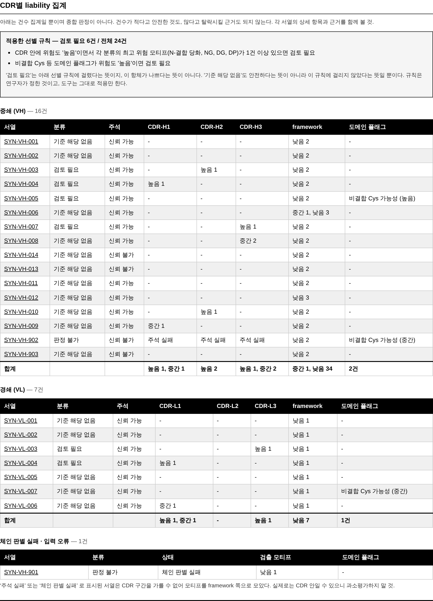
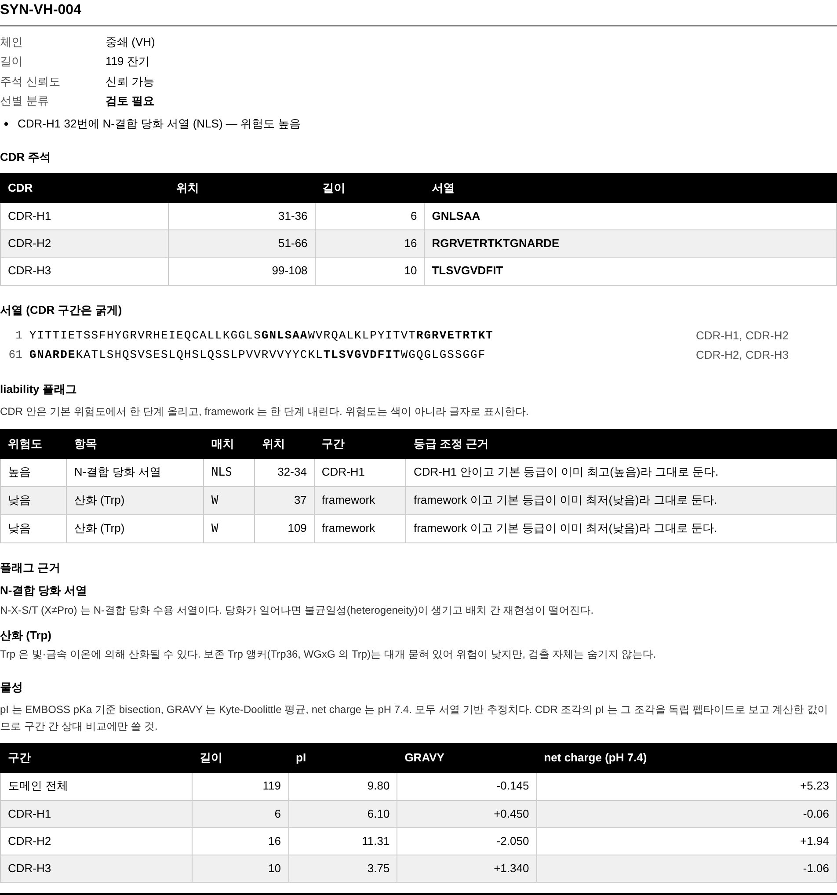
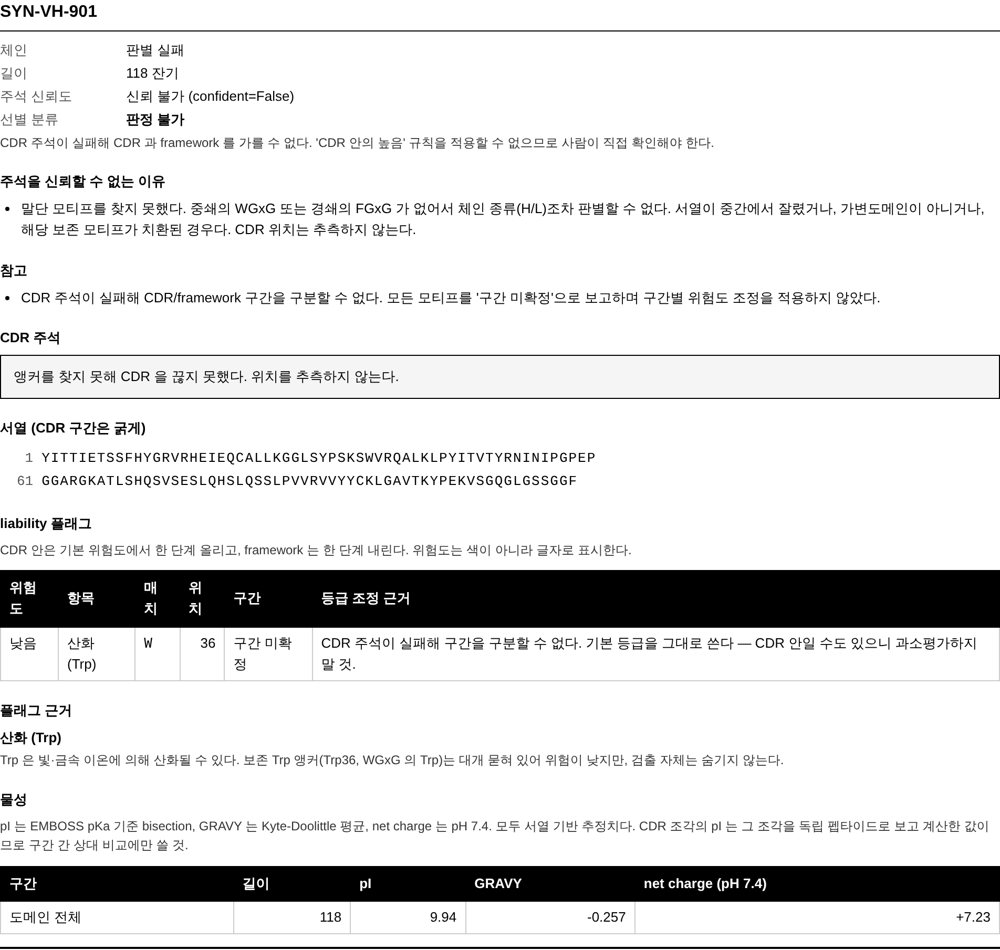

abcheck 사용 설명서
항체 가변도메인(VH/VL) 서열 셀프 점검 도구
항체의 중쇄 가변도메인(VH) 또는 경쇄 가변도메인(VL) 아미노산 서열 하나를 받아 다음 세 가지를 보여준다.
여러 서열을 한 번에 넣으면 리포트 맨 앞에 후보 비교표가 나오고, 연구자가 정한 규칙에 따라 '검토 필요'를 표시한다.
구조 예측, 도킹, 결합력 예측은 범위 밖이다. 외부 데이터베이스나 API 를 호출하지 않으므로 사내 후보 서열을 넣어도 밖으로 나가지 않는다.
터미널을 연다. VS Code 를 쓴다면 Ctrl + ` (맥은 Cmd + `).
python3 --version
git clone https://github.com/strawberryHunter/ab-seq-selfcheck.git
cd ab-seq-selfcheckgit 이 없으면 GitHub 화면의 초록색 Code → Download ZIP 으로 받아 압축을 풀어도 된다.
python3 -m abcheck.cli --help
No module named abcheck 가 나오면 cd ab-seq-selfcheck 를 먼저 했는지 확인한다.VH 하나 또는 VL 하나를 넣는다. 중쇄인지 경쇄인지는 도구가 말단 모티프(WGxG / FGxG)로 스스로 판별하므로 알려주지 않아도 된다.
| 형식 | 언제 쓰나 | 명령 |
|---|---|---|
| 서열 문자열 | 서열 하나를 바로 볼 때 | python3 -m abcheck.cli "서열" |
| FASTA 파일 (.fasta .fa .faa) | 후보 여러 개 | python3 -m abcheck.cli 후보.fasta |
| JSON 파일 (.json) | 다른 스크립트가 만든 목록 | python3 -m abcheck.cli 목록.json |
메모장이나 VS Code 로 아래처럼 쓰고 후보.fasta 로 저장한다. > 로 시작하는 줄이 이름, 그 아래가 서열이다. 서열은 여러 줄로 나눠 써도 된다.
>후보-01 YITTIETSSFHYGRVRHEIEQCALLKGGLSRAHSIWVRQALKLPYITVTKDNREFVYFQE VGQYDKATLSHQSVSESLQHSLQSSLPVVRVVYYCKLAPSGSYFGRVWGQGLGSSGGF >후보-02 YITTIETSSFHYGRVRHEIEQCALLKGGLSGNLSAAWVRQALKLPYITVTRGRVETRTKTGNARDEKATLSHQSVSESLQHSLQSSLPVVRVVYYCKLTLSVGVDFITWGQGLGSSGGF
{"sequences": [
{"id": "후보-01", "sequence": "QVQL..."},
{"id": "후보-02", "sequence": "EVQL..."}
]}
| 항목 | 규칙 |
|---|---|
| 허용 문자 | 표준 아미노산 20종 (ACDEFGHIKLMNPQRSTVWY). 대소문자 무관 |
| 자동 정리 | 공백·줄바꿈은 알아서 지운다. 소문자는 대문자로 바꾼다 |
| 길이 | 70 ~ 200 잔기 (VH 는 보통 115~130, VL 은 105~115) |
| 거부 | 숫자·구두점, 모호 코드(X B Z J U O), FASTA 헤더가 섞인 문자열, DNA 서열 |
전장 중쇄, Fab, scFv 는 그대로 넣으면 '너무 길다'로 거부된다. 가변도메인만 잘라낸다.
| 시작 (대개) | 끝 — 여기까지 자른다 | 그 뒤는 | |
|---|---|---|---|
| VH | EVQL… / QVQL… | WGxG 뒤 …VTVSS | ASTKGPSV… (CH1) |
| VL kappa | DIQM… / EIVL… | FGxG 뒤 …KVEIK | RTVAAPSV… (CL) |
| VL lambda | QSVL… / SYEL… | FGxG 뒤 …TVL | GQPKAAPS… (CL) |
MGWSWIFLFLLSG… 같은 19잔기 안팎의 신호서열이 붙어 있으면 보존 Cys 가 탐색 범위를 벗어나 주석이 실패한다. 발현 태그(MA…) 정도의 짧은 꼬리는 괜찮다.따옴표 안에 서열을 붙여넣는다.
python3 -m abcheck.cli "YITTIETSSFHYGRVRHEIEQCALLKGGLSGNLSAAWVRQALKLPYITVTRGRVETRTKTGNARDEKATLSHQSVSESLQHSLQSSLPVVRVVYYCKLTLSVGVDFITWGQGLGSSGGF"
sample_output/report.html 이 생긴다. 더블클릭하면 브라우저에서 열린다.
python3 -m abcheck.cli 후보.fasta --html
다른 폴더·이름으로 저장하려면:
python3 -m abcheck.cli 후보.fasta --html --out-dir 결과 --out-name 1차선별.html
python3 -m abcheck.cli 후보.fasta --json > 결과.json
제형 pH 를 검토할 때 쓴다. 기본은 7.4.
python3 -m abcheck.cli 후보.fasta --ph 6.0
| 옵션 | 뜻 | 기본값 |
|---|---|---|
| --html | HTML 리포트 파일을 만든다 | 꺼짐 (터미널 표) |
| --json | JSON 을 화면으로 출력한다 (> 로 파일에 저장) | 꺼짐 |
| --out-dir | HTML 을 저장할 폴더 | sample_output |
| --out-name | HTML 파일 이름 | report.html |
| --ph | net charge 를 계산할 pH | 7.4 |
| 종료 코드 | 뜻 |
|---|---|
| 0 | 정상 처리 (주석을 신뢰할 수 없는 서열이 있어도 0 — 그건 실패가 아니라 결과다) |
| 1 | 입력 검증에서 걸러진 서열이 있다 (나머지는 처리된다) |
| 2 | 입력 파일을 읽을 수 없다 (파일이 없거나 형식이 틀림) |
4장의 ① 명령을 실행했을 때 실제로 나오는 출력이다. 덩어리별로 읽는 법을 적었다.
결과만 떼어 남에게 보여줄 때도 이 고지가 따라가도록 일부러 매번 붙인다.
============================================================================================
abcheck 0.1.0 — 항체 가변도메인 서열 셀프 점검
============================================================================================
[이 도구의 한계]
- 이 도구는 보존 잔기 앵커 기반 스크리닝 휴리스틱이다. ANARCI/IMGT 같은 numbering
엔진이 아니다.
- CDR 경계는 Kabat 을 근사한 것이며, 번호를 매기지 않는다. 삽입/결실이 있는 서열에서는
경계가 밀릴 수 있다.
- liability 플래그는 서열 모티프만 본다. 구조적 노출도(용매 접근성)를 보지 않으므로
실제 위험도는 다를 수 있다.
- pI/GRAVY/net charge 는 서열 기반 추정치다. 실측값과 다를 수 있다.
- 다음 경우에는 ANARCI/IMGT 로 반드시 재확인할 것: confident=False 인 서열, CDR 길이가
통상 범위를 벗어난 서열, 비(非)항체 또는 비정형 스캐폴드(나노바디·scFv·이중특이체
링커 포함)로 의심되는 서열, 그리고 이 결과를 근거로 후보를 탈락시키려는 모든 경우.
이 도구는 '개발 가능성 높음/낮음' 같은 종합 판정을 내리지 않는다. 플래그와 그 근거만
제시한다. 판단은 사람이 한다.
예시는 CDR-H1 안에 N-결합 당화 서열이 있는 합성 서열이다.
--------------------------------------------------------------------------------------------
[입력 서열]
--------------------------------------------------------------------------------------------
체인: 중쇄 (VH) 길이: 119 잔기 주석 신뢰도: 신뢰 가능
선별 분류: 검토 필요
→ CDR-H1 32번에 N-결합 당화 서열 (NLS) — 위험도 높음
[CDR 주석] 좌표는 1-based, 양끝 포함
CDR | 위치 | 길이 | 서열
-------+--------+------+-----------------
CDR-H1 | 31-36 | 6 | GNLSAA
CDR-H2 | 51-66 | 16 | RGRVETRTKTGNARDE
CDR-H3 | 99-108 | 10 | TLSVGVDFIT
앵커: 말단 모티프 109번, 보존 Cys(1) 22번, 보존 Trp 37번, FR3 모티프 67번, 보존 Cys(2)
96번
[서열] ^ 표시가 CDR 구간
1 YITTIETSSFHYGRVRHEIEQCALLKGGLSGNLSAAWVRQALKLPYITVTRGRVETRTKT
^^^^^^ ^^^^^^^^^^ CDR-H1, CDR-H2
61 GNARDEKATLSHQSVSESLQHSLQSSLPVVRVVYYCKLTLSVGVDFITWGQGLGSSGGF
^^^^^^ ^^^^^^^^^^ CDR-H2, CDR-H3
[liability 플래그] CDR 안은 위험도를 한 단계 올리고, framework 는 한 단계 내린다
등급 분포: 높음 1건, 중간 0건, 낮음 2건
위험도 | 항목 | 매치 | 위치 | 구간
-------+------------------+------+-------+----------
높음 | N-결합 당화 서열 | NLS | 32-34 | CDR-H1
낮음 | 산화 (Trp) | W | 37 | framework
낮음 | 산화 (Trp) | W | 109 | framework
[플래그 근거]
- N-결합 당화 서열
N-X-S/T (X≠Pro) 는 N-결합 당화 수용 서열이다. 당화가 일어나면
불균일성(heterogeneity)이 생기고 배치 간 재현성이 떨어진다.
- 산화 (Trp)
Trp 은 빛·금속 이온에 의해 산화될 수 있다. 보존 Trp 앵커(Trp36, WGxG 의
Trp)는 대개 묻혀 있어 위험이 낮지만, 검출 자체는 숨기지 않는다.
[물성] pI 는 EMBOSS pKa 기준, GRAVY 는 Kyte-Doolittle, net charge 는 pH 7.4
구간 | 길이 | pI | GRAVY | net charge
------------+------+-------+--------+-----------
도메인 전체 | 119 | 9.80 | -0.145 | +5.23
CDR-H1 | 6 | 6.10 | +0.450 | -0.06
CDR-H2 | 16 | 11.31 | -2.050 | +1.94
CDR-H3 | 10 | 3.75 | +1.340 | -1.06
| 덩어리 | 읽는 법 |
|---|---|
| 체인 · 주석 신뢰도 | 신뢰 가능이면 CDR 위치를 그대로 써도 된다. 신뢰 불가면 바로 아래 '이유'를 읽는다 (9장). |
| 선별 분류 | 8장의 규칙에 걸렸는지. 검토 필요면 → 다음 줄에 어디에 무엇이 걸렸는지가 나온다. |
| [CDR 주석] | 좌표는 1-based, 양끝 포함. 31-36 은 31번 잔기부터 36번 잔기까지. |
| 앵커 | CDR 경계를 정하는 데 쓴 보존 잔기의 위치. 이상한 결과가 나왔을 때 원인을 찾는 단서. |
| [서열] | ^ 표시가 CDR 구간이다. 오른쪽에 어느 CDR 인지 적힌다. |
| [liability 플래그] | 위험도는 높음/중간/낮음 글자로만 표시한다. 같은 모티프라도 CDR 안이면 한 단계 높다. |
| [플래그 근거] | 각 항목이 왜 문제인지 한 문장씩. 회의 자료에 그대로 옮겨도 된다. |
| [물성] | pI 는 등전점, GRAVY 는 양수면 소수성, net charge 는 pH 7.4 의 알짜 전하. CDR 별 pI 는 구간 간 상대 비교에만 쓴다. |
WGxG 의 Trp 은 거의 모든 항체에 있는 보존 잔기라 매번 framework 산화(낮음)로 잡힌다. 단백질 안쪽에 묻혀 있어 실제 위험은 낮지만, 검출 자체를 숨기지는 않는다.Cys 개수가 홀수면 짝을 못 이룬 Cys 가 있다는 뜻이라 서열 전체에 대한 플래그로 따로 나온다.
[도메인 플래그] 비결합 Cys 가능성 — 위험도 높음
도메인 내 Cys 가 3개로 홀수다. 가변도메인은 보존 Cys 한 쌍이 도메인 내부
이황화결합을 이루므로 개수는 보통 짝수다. 홀수면 짝을 못 이룬 Cys 가 있다는
뜻이고, 이는 응집·이분자 가교·불균일한 이황화 짝짓기를 일으킬 수 있다. 특히
CDR 안의 Cys(103번)는 결합 부위에 있어 위험도가 더 높다.
--html 로 만든 리포트다. 아래 화면은 저장소의 합성 예시 24개를 넣어 만든 sample_output/report.html 이다.
중쇄·경쇄·체인 판별 실패가 따로 나온다. 분류 열로 먼저 볼 후보를 고르고, 서열 이름을 누르면 상세로 이동한다.


위치를 지어내지 않고, 왜 못 했는지를 적는다.

터미널 표에 안 나오는 것까지 전부 들어 있다. 아래는 4장 ① 서열의 실제 JSON 출력에서 핵심 필드만 발췌한 것이다.
{
"id": "SYN-VH-004",
"annotation": {
"chain": "H",
"confident": true,
"cdrs": {
"CDR-H1": {
"start": 31,
"end": 36,
"length": 6,
"seq": "GNLSAA"
},
"CDR-H2": {
"start": 51,
"end": 66,
"length": 16,
"seq": "RGRVETRTKTGNARDE"
},
"CDR-H3": {
"start": 99,
"end": 108,
"length": 10,
"seq": "TLSVGVDFIT"
}
}
},
"liabilities": {
"counts_by_risk": {
"높음": 1,
"중간": 0,
"낮음": 2
},
"hits": [
{
"label": "N-결합 당화 서열",
"match": "NLS",
"start": 32,
"end": 34,
"region": "CDR-H1",
"risk": "높음"
}
]
},
"triage": {
"status": "검토 필요",
"reasons": [
"CDR-H1 32번에 N-결합 당화 서열 (NLS) — 위험도 높음"
]
},
"properties": {
"도메인 전체": {
"label": "도메인 전체",
"length": 119,
"pI": 9.8,
"GRAVY": -0.145,
"net_charge": 5.23,
"pH": 7.4
}
}
}
| 키 | 내용 |
|---|---|
| limitations / no_verdict | 한계 고지. 파일 하나만 떼어 넘겨도 따라간다 |
| summary | 후보 비교표와 같은 집계 (중쇄/경쇄 묶음, 합계) |
| sequences[].annotation | 체인, 신뢰도, 사유, 앵커 위치, CDR 좌표 |
| sequences[].liabilities | 모티프별 위치·구간·위험도·근거, 도메인 플래그 |
| sequences[].properties | 도메인 전체와 CDR 별 pI · GRAVY · net charge |
| sequences[].triage | 선별 분류와 걸린 사유 |
모티프마다 기본 등급이 있고, CDR 안이면 한 단계 올리고 framework 면 한 단계 내린다 (높음·낮음에서는 멈춘다).
| 항목 | 모티프 | 기본 | CDR 안 | framework |
|---|---|---|---|---|
| N-결합 당화 서열 | N[^P][ST] | 높음 | 높음 | 중간 |
| deamidation (NG) | NG | 높음 | 높음 | 중간 |
| deamidation (NS/NT/NN/NH) | N[STNH] | 중간 | 높음 | 낮음 |
| isomerization (DG) | DG | 높음 | 높음 | 중간 |
| isomerization (DS/DT/DD) | D[STD] | 중간 | 높음 | 낮음 |
| fragmentation (DP) | DP | 중간 | 높음 | 낮음 |
| 산화 (Met) | M | 낮음 | 중간 | 낮음 |
| 산화 (Trp) | W | 낮음 | 중간 | 낮음 |
| 비결합 Cys | 도메인 내 Cys 홀수 | - | 높음 (Cys 가 CDR 안) | 중간 |
기본 규칙은 아래 두 개다. 하나라도 걸리면 검토 필요.
| 분류 | 뜻 |
|---|---|
| 검토 필요 | 규칙에 걸렸다. 항체가 나쁘다는 뜻이 아니다 — 먼저 들여다볼 후보라는 뜻 |
| 기준 해당 없음 | 규칙에 걸리지 않았다. 안전하다는 뜻이 아니다 |
| 판정 불가 | CDR 주석이 실패해 규칙을 적용할 수 없다. 사람이 직접 봐야 한다 |
abcheck/triage.py 의 DEFAULT_RULES 에 글로 적혀 있다. 기준이 코드에 남으므로 나중에 "왜 이 후보를 먼저 봤지"를 추적할 수 있다. 약한 등급(NS/NT/DS 등)이 CDR 상향으로 '높음'이 되어도 선별에는 걸리지 않게 한 것은, 실제 레퍼토리에서 그런 모티프가 너무 흔해 모든 후보가 걸리기 때문이다.도구는 앵커를 못 찾으면 위치를 지어내지 않고 이유를 적는다. 아래는 실제 출력되는 사유들이다.
말단 모티프를 찾지 못했다. 중쇄의 WGxG 또는 경쇄의 FGxG 가 없어서 체인 종류(H/L)조차 판별할 수 없다. 서열이 중간에서 잘렸거나, 가변도메인이 아니거나, 해당 보존 모티프가 치환된 경우다. CDR 위치는 추측하지 않는다.
보존 Cys22 를 찾지 못했다. 15-30번 구간에 Cys 가 없다. 이 Cys 는 도메인 내부 이황화결합의 한쪽이라 거의 항상 보존된다. N-말단이 잘렸거나 Cys 가 치환된 경우다. CDR-H1 위치는 추측하지 않는다.
CDR-H1 길이가 9 잔기로 통상 범위(5-7)보다 길다. 앵커 자체는 찾았지만 경계가 밀렸을 수 있다. ANARCI/IMGT 로 경계를 재확인할 것.
FR3 시작 모티프([RKQ].[TSAV][IMLFV][STAN])를 찾지 못해, 보존 Cys(95번)에서 29잔기 역산해 CDR-H2 의 끝을 65번으로 잡았다. 체세포 과변이로 모티프가 깨진 서열에서 흔하다. 위치는 그대로 보고하지만 모티프를 직접 확인한 것보다 근거가 약하므로, CDR-H2 경계를 ANARCI/IMGT 로 반드시 재확인할 것.
| 사유에 이런 말이 있으면 | 의심할 것 | 할 일 |
|---|---|---|
| 보존 Cys22 / Cys23 를 찾지 못했다 | 신호서열이 붙어 있다 / N-말단이 잘렸다 | 서열 앞부분 확인, 신호서열 제거 |
| 말단 모티프를 찾지 못했다 | C-말단이 잘렸다 / 가변도메인이 아니다 | 서열 끝이 …WGxG… 또는 …FGxG… 인지 확인 |
| CDR-? 길이가 통상 범위보다 | 앵커는 찾았지만 경계가 밀렸을 수 있다 | ANARCI/IMGT 로 경계 재확인 |
| … 역산해 … | 체세포 과변이로 FR3 모티프가 깨졌다 | 위치는 대개 맞다. ANARCI 로 확인 후 사용 |
| … 통상값과 다르다 … 고쳐 잡았다 | 모티프가 엉뚱한 자리에 걸렸다 | 고친 위치를 ANARCI 로 확인 |
입력이 잘못되면 처리하지 않고 한글로 이유를 알려준다. 아래는 실제 메시지다.
넣은 것: ACDEFGHIKL
서열이 너무 짧다 (10 잔기). 가변도메인 하나는 보통 70 잔기 이상이다. CDR 조각만 넣은 것이 아닌지 확인하라 — 이 도구는 도메인 전체를 받는다.
넣은 것: >후보1 (줄바꿈) QVQL…
FASTA 헤더가 섞여 있다 (예: '>후보1'). '>' 로 시작하는 줄을 지우고 아미노산 서열만 남겨라. 여러 서열을 FASTA 로 넣으려면 파일로 저장한 뒤 파일 경로를 넣으면 된다 (예: python3 -m abcheck.cli 후보.fasta).
넣은 것: …SSS123SSS…
아미노산이 아닌 문자가 있다: '1', '2', '3' (51번째 '1', 52번째 '2', 53번째 '3'). DNA 서열이나 숫자·구두점이 섞이지 않았는지 확인하라.
넣은 것: …X…
모호한 아미노산 코드가 있다: X(불특정 잔기). 이 도구는 모호 코드를 추측하지 않는다. 확정된 잔기로 바꿔라.
넣은 것: ATGGCCATTG…
DNA/RNA 서열로 보인다 (A/C/G/T/U/N 으로만 이뤄진 117 글자). 이 도구는 아미노산 서열만 받는다. 번역한 단백질 서열을 넣어라.
넣은 것: VH + 링커 + VL (241 잔기)
서열이 너무 길다 (241 잔기). 이 도구는 VH 또는 VL 도메인 하나만 받는다 (허용 범위 70-200 잔기). scFv·Fab·전장 항체라면 VH 와 VL 을 각각 나눠서 넣어라.
| 메시지 | 원인 | 고치는 법 |
|---|---|---|
| 파일을 찾을 수 없다 | 경로가 틀렸다 | 파일 이름·확장자 확인, 저장소 폴더 안에서 실행 |
| 'sequence' 키가 없다 | JSON 형식이 다르다 | 3장의 JSON 형식으로 맞춘다 |
| No module named abcheck | 저장소 폴더 밖에서 실행했다 | cd ab-seq-selfcheck |
파지 디스플레이나 B 세포 클로닝에서 후보가 수십 개 나왔을 때의 순서다.
python3 -m abcheck.cli 후보.fasta --html --out-name 1차선별.html
--------------------------------------------------------------------------------------------
[CDR별 liability 집계]
--------------------------------------------------------------------------------------------
아래는 건수 집계일 뿐이며 종합 판정이 아니다. 건수가 적다고 안전한 것도, 많다고
탈락시킬 근거도 되지 않는다. 각 서열의 상세 항목과 근거를 함께 볼 것.
적용한 선별 규칙 — 검토 필요 6건 / 전체 24건
- CDR 안에 위험도 '높음'이면서 각 분류의 최고 위험 모티프(N-결합 당화, NG, DG,
DP)가 1건 이상 있으면 검토 필요
- 비결합 Cys 등 도메인 플래그가 위험도 '높음'이면 검토 필요
'검토 필요'는 아래 선별 규칙에 걸렸다는 뜻이지, 이 항체가 나쁘다는 뜻이 아니다. '기준
해당 없음'도 안전하다는 뜻이 아니라 이 규칙에 걸리지 않았다는 뜻일 뿐이다. 규칙은
연구자가 정한 것이고, 도구는 그대로 적용만 한다.
■ 중쇄 (VH) — 16건
서열 | 분류 | 주석 | CDR-H1 | CDR-H2 | CDR-H3 | framework | 도메인 플래그
-----------+----------------+-----------+----------------+-----------+----------------+-----------------+-------------------------
SYN-VH-001 | 기준 해당 없음 | 신뢰 가능 | - | - | - | 낮음 2 | -
SYN-VH-002 | 기준 해당 없음 | 신뢰 가능 | - | - | - | 낮음 2 | -
SYN-VH-003 | 검토 필요 | 신뢰 가능 | - | 높음 1 | - | 낮음 2 | -
SYN-VH-004 | 검토 필요 | 신뢰 가능 | 높음 1 | - | - | 낮음 2 | -
SYN-VH-005 | 검토 필요 | 신뢰 가능 | - | - | - | 낮음 2 | 비결합 Cys 가능성 (높음)
SYN-VH-006 | 기준 해당 없음 | 신뢰 가능 | - | - | - | 중간 1, 낮음 3 | -
SYN-VH-007 | 검토 필요 | 신뢰 가능 | - | - | 높음 1 | 낮음 2 | -
SYN-VH-008 | 기준 해당 없음 | 신뢰 가능 | - | - | 중간 2 | 낮음 2 | -
SYN-VH-014 | 기준 해당 없음 | 신뢰 불가 | - | - | - | 낮음 2 | -
SYN-VH-013 | 기준 해당 없음 | 신뢰 불가 | - | - | - | 낮음 2 | -
SYN-VH-011 | 기준 해당 없음 | 신뢰 가능 | - | - | - | 낮음 2 | -
SYN-VH-012 | 기준 해당 없음 | 신뢰 가능 | - | - | - | 낮음 3 | -
SYN-VH-010 | 기준 해당 없음 | 신뢰 가능 | - | 높음 1 | - | 낮음 2 | -
SYN-VH-009 | 기준 해당 없음 | 신뢰 가능 | 중간 1 | - | - | 낮음 2 | -
SYN-VH-902 | 판정 불가 | 신뢰 불가 | 주석 실패 | 주석 실패 | 주석 실패 | 낮음 2 | 비결합 Cys 가능성 (중간)
SYN-VH-903 | 기준 해당 없음 | 신뢰 불가 | - | - | - | 낮음 2 | -
합계 | | | 높음 1, 중간 1 | 높음 2 | 높음 1, 중간 2 | 중간 1, 낮음 34 | 2건
■ 경쇄 (VL) — 7건
서열 | 분류 | 주석 | CDR-L1 | CDR-L2 | CDR-L3 | framework | 도메인 플래그
-----------+----------------+-----------+----------------+--------+--------+-----------+-------------------------
SYN-VL-001 | 기준 해당 없음 | 신뢰 가능 | - | - | - | 낮음 1 | -
SYN-VL-002 | 기준 해당 없음 | 신뢰 가능 | - | - | - | 낮음 1 | -
SYN-VL-003 | 검토 필요 | 신뢰 가능 | - | - | 높음 1 | 낮음 1 | -
SYN-VL-004 | 검토 필요 | 신뢰 가능 | 높음 1 | - | - | 낮음 1 | -
SYN-VL-005 | 기준 해당 없음 | 신뢰 가능 | - | - | - | 낮음 1 | -
SYN-VL-007 | 기준 해당 없음 | 신뢰 가능 | - | - | - | 낮음 1 | 비결합 Cys 가능성 (중간)
SYN-VL-006 | 기준 해당 없음 | 신뢰 가능 | 중간 1 | - | - | 낮음 1 | -
합계 | | | 높음 1, 중간 1 | - | 높음 1 | 낮음 7 | 1건
■ 체인 판별 실패 · 입력 오류 — 1건
서열 | 분류 | 상태 | 검출 모티프 | 도메인 플래그
-----------+-----------+----------------+-------------+--------------
SYN-VH-901 | 판정 불가 | 체인 판별 실패 | 낮음 1 | -
'주석 실패' 또는 '체인 판별 실패' 로 표시된 서열은 CDR 구간을 가를 수 없어 모티프를
framework 쪽으로 모았다. 실제로는 CDR 안일 수 있으니 과소평가하지 말 것.
공개 항체 레퍼토리 데이터베이스(OAS)의 실제 서열 7,000개로 측정했다. 측정 절차는 저장소의
scripts/validate_on_oas.py, scripts/compare_with_anarci.py 로 누구나 다시 돌려볼 수 있다.
| 항목 | 결과 |
|---|---|
| 체인(H/L) 판별 | 오판 0건 / 6,984 |
| CDR 주석 성공 | 98.3% |
| CDR 경계 (ANARCI 정답 대비, 16,427건) | 불일치 0.35% |
| 사람 naive B 세포 데이터 | 신뢰 가능 99.8% |
| 과변이가 심한 memory/plasma B 세포 | 신뢰 가능 89~95% |
자세한 측정 방법, 실제 데이터로 찾아 고친 버그, 고치지 않기로 한 것은 저장소의 VALIDATION.md 에 있다.
| 체인 | 순서 |
|---|---|
| VH | Cys22 → CDR-H1 (Cys22+9 부터) → Trp36 (뒤에 [VIA][RKQ]Q) → CDR-H2 (Trp36+14 부터) → FR3 모티프 [RKQ].[TSAV][IMLFV][STAN] → Cys92 (앞에 Y/F) → CDR-H3 (Cys92+3 부터) → WGxG |
| VL | Cys23 → CDR-L1 (Cys23+1 부터) → Trp35 (뒤에 [YF][QL]Q) → CDR-L2 (Trp35+15 부터, 7잔기) → Cys88 (앞에 Y/F) → CDR-L3 (Cys88+1 부터) → FGxG |
FR3 모티프를 못 찾으면 보존 Cys 에서 29잔기 역산한다 (실제 VH 3,443건 중 3,429건이 29 였고, 나머지 14건은 모두 모티프가 엉뚱한 자리에 걸린 경우였다). 이 경우 '신뢰 불가'로 표시한다.
이 범위를 벗어나면 '신뢰 불가'가 된다. 이 범위는 "항체가 이상한가"가 아니라 "주석을 믿을 수 있는가"의 기준이다.
| CDR | 통상 길이 (잔기) |
|---|---|
| CDR-H1 | 5-7 |
| CDR-H2 | 16-20 |
| CDR-H3 | 3-30 |
| CDR-L1 | 7-17 |
| CDR-L2 | 7 |
| CDR-L3 | 5-15 |
| 값 | 방법 |
|---|---|
| pI | EMBOSS pKa 값 (N말단 8.6, C말단 3.6, D 3.9, E 4.1, C 8.5, Y 10.1, H 6.5, K 10.8, R 12.5), bisection |
| GRAVY | Kyte-Doolittle hydropathy 평균. 양수 = 소수성 |
| net charge | Henderson-Hasselbalch. 기본 pH 7.4 |
| 파일 | 내용 |
|---|---|
| README.md / README.ko.md | 개요와 검증 요약 (영문 / 한글) |
| TUTORIAL.md | 이 설명서의 짧은 판 |
| VALIDATION.md | 측정 방법, 결과, 알려진 한계 |
| DECISIONS.md | 설계 판단과 그 이유 |